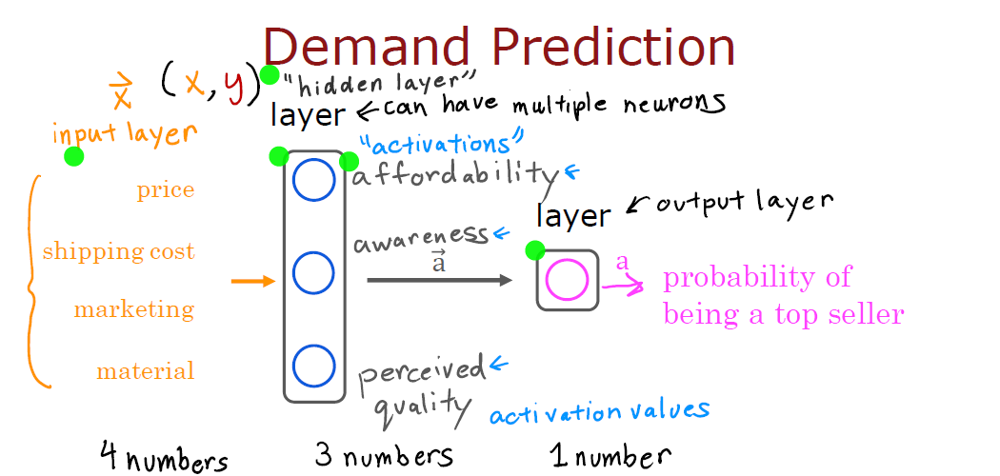

Advanced Learning Algorithms
Neural Networks
Basic Structure:
- Input Layer: Receives the input data features (e.g., pixel values of an image).
- Hidden Layers: One or more layers where computations are performed. Each neuron in a hidden layer receives inputs, applies a weight, adds a bias, and then passes the result through an activation function to produce an output.
- Output Layer: Produces the final prediction or output of the network. For example, a binary classification problem might produce two values representing the probability of each class.
Components:
- Neurons: The building blocks of the network. Each neuron performs a weighted sum of its inputs and applies an activation function.
- Weights: Parameters that define the strength of connections between neurons.
- Biases: Additional parameters added to the weighted sum before applying the activation function.
- Activation Functions: Functions like ReLU (Rectified Linear Unit), Sigmoid, or Tanh, which introduce non-linearity and help the network learn complex patterns.
Learning Process:
- Neural networks are trained using a process called backpropagation:
- Forward Pass: The input data is passed through the network, generating predictions.
- Loss Calculation: A loss function (e.g., Mean Squared Error for regression) measures how far the predictions are from the actual values.
- Backward Pass: The network calculates the gradients of the loss with respect to each weight using a method called gradient descent. This tells the network how to update its weights to reduce the loss.
- Weight Update: The weights are adjusted to minimize the loss.
Types of Neural Networks:
- Feedforward Neural Networks: Data flows in one direction (from input to output), commonly used for general prediction problems.
- Convolutional Neural Networks (CNNs): Used for image recognition and computer vision tasks.
- Recurrent Neural Networks (RNNs): Designed for sequential data, like time series or language modeling.
Demand Prediction
{kind=link}

- Input Layer:
- This layer includes features influencing demand, such as price, shipping, marketing, and material costs. These features are represented as 4 numbers (input variables) fed into the neural network.
- Each feature helps the network understand factors that might impact the demand for a product.
- Hidden Layer:
- The hidden layer consists of neurons (shown as blue circles), and this layer processes the input data. The activations from this layer represent intermediate computations based on the input.
- In this example, the hidden layer learns representations like affordability, awareness, and perceived quality, which are abstract features created by the neural network to predict demand.
- Output Layer:
- The final output layer produces a single number, which could represent a prediction like the probability of a product being a top seller. This results from all computations from the hidden layer being processed to give a final forecast (for example, predicting how well a product will sell).
- Activations:
- After processing the input through the hidden layer, activation values are generated and passed to the output layer. These activation values help in forming the final prediction.
In summary, demand prediction here involves feeding relevant business features (like price and marketing) into a neural network that uses hidden layers to create intermediate features (such as affordability and awareness). These help predict the likelihood of a product being a top seller.
Multiple Hidden Layers

- Why Multiple Hidden Layers?:
- Using multiple hidden layers allows the neural network to build more abstract representations of the input data. For example, the first layer might learn basic patterns, while deeper layers can learn more complex relationships, enabling the network to capture non-linear dependencies between input features and demand.
- However, as the number of hidden layers increases, the network may require more data and computational power to train effectively. This is especially useful when the data is complex, and simple models might not perform well.
Key Takeaways:
- Single hidden layer models can capture basic patterns in the data but might struggle with more complex relationships.
- Multiple hidden layers allow for more nuanced and detailed learning, making neural networks more powerful for tasks like demand prediction, where many factors interact in complex ways.
- Neural networks with deeper architectures (more hidden layers) can handle the non-linear and multivariate nature of demand forecasting, leading to more accurate predictions.
Face Recognition Using Neural Networks

Image as a Matrix of Pixels:
- The face image is made up of pixels. Each pixel has an intensity value (ranging from 0 to 255) for a grayscale image.
- If the image is pixels, it creates a 2D matrix (or grid) of values, resulting in 1 million pixel values. Each number in this grid represents the brightness of a pixel.
Flattening the Matrix:
- This matrix (2D) is then flattened into a 1D vector (array). In this case, the 1 million pixel values from the image are arranged into a column vector of length 1 million.
- This vector becomes the input for the neural network.
Example for Convolutional Neural Network (CNN)

- Input Layer:
- The pixel values from the flattened image are fed into the neural network as the input layer.
- Neural networks process images by breaking down the image into small sections, called filters or convolutions. These filters capture important features, such as edges, textures, and patterns (shown in the blue squares on the face).
- Convolutional Layers:
- Each layer in the CNN applies these filters to different parts of the image. The lower layers detect simple features, such as edges or corners (as shown in the second section of the image, where grids detect smaller features).
- As we go deeper into the network, the layers detect more complex patterns like eyes, noses, or mouths (the higher-level features). This is demonstrated by the progressively more detailed and structured patterns seen in the middle and right parts of the second image.
- Fully Connected Layer:
- After convolutional layers, the final layer is a fully connected layer (shown by the circle nodes). Each node in this layer represents a probability, specifically the likelihood of the input image corresponding to a specific person (for instance, "Person XYZ").
- Output:
- The neural network outputs a probability value representing how confident it is that the image belongs to a certain person. If the probability is high, it identifies the person as "XYZ."